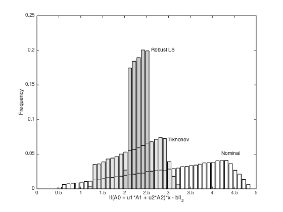

% Section 6.4.2, Figure 6.16 % Boyd & Vandenberghe "Convex Optimization" % Original by Lieven Vandenberghe % Adapted for CVX Argyris Zymnis - 11/27/05 % (a figure is generated) % % Consider the least-squares problem: % minimize ||(A0 + u1*A1 + u2*A2)x - b||_2 % where u = [u1 u2]' is an uncertain parameter and ||u||_2 <= 1 % Three approximate solutions are found: % 1- nominal optimal (i.e. letting u=0) % 2- Tikhonov Regularized Solution: % minimize ||A0*x - b||_2 + delta*||x||_2 % for some delta (in this case we set delta = 0.1) % 3- worst-case robust approximation: % minimize sup{||u||_2 <= 1} ||(A0 + u1*A1 + u2*A2)x - b||_2) % (reduces to solving an SDP, see pages 323-324 in the book) m = 50; n = 20; randn('state',0); rand('state',0); A0 = randn(m,n); [U,S,V] = svd(A0); S= diag(fliplr(logspace(-0.7,1,n))); A0 = U(:,1:n)*S*V'; A1 = randn(m,n); A1 = A1/norm(A1); A2 = randn(m,n); A2 = A2/norm(A2); Aperb0 = [A1;A2]; p = 2; b = U(:,1:n)*randn(n,1) + .1*randn(m,1); % we consider LS problems || (A0 + u1*A1 + u2*A2) x - b|| % where ||u|| leq rho % Nominal Solution xnom = A0\b; % Tikhonov Regularized Solution delta = .1; xtych = [A0; sqrt(delta)*eye(n)] \ [b; zeros(n,1)]; % Robust Least Squares solution cvx_begin sdp quiet variables t lambda xrob(n) minimize(t+lambda) subject to [eye(m) A1*xrob A2*xrob A0*xrob-b; ... [A1*xrob A2*xrob]' lambda*eye(2) zeros(2,1); ... [A0*xrob-b]' zeros(1,2) t] >= 0; cvx_end % Generate Random Trials notrials=100000; r = sqrt(rand(notrials,1)); % random on [0,1] with pdf g(r) = 2r; theta = 2*pi*rand(notrials,1); % uniform on [0,2pi] v = [r.*cos(theta) r.*sin(theta)]; ls_res = zeros(1,notrials); rob2_res = zeros(1,notrials); rob_res = zeros(1,notrials); tych_res = zeros(1,notrials); for i =1:notrials A = A0 + v(i,1)*A1 + v(i,2)*A2; ls_res(i) = norm(A*xnom-b); rob_res(i) = norm(A*xrob-b); tych_res(i) = norm(A*xtych-b); end; % Plot histograms figure %subplot(211) [N1, hist1] = hist(ls_res,[min(ls_res):.1:max(ls_res)]); freq1 = N1/notrials; [N2, hist2] = hist(rob_res,hist1); freq2 = N2/notrials; [N3, hist3] = hist(tych_res,hist1); freq3 = N3/notrials; h = bar(hist3,freq3); text(3, 0.07, 'Tikhonov'); set(h,'FaceColor',0.90*[1 1 1]); hold on h = bar(hist2,freq2); text(4.2, 0.05, 'Nominal'); set(h,'FaceColor',0.80*[1 1 1]); h = bar(hist2,freq2); set(h,'FaceColor','none'); text(2.6, 0.2, 'Robust LS'); h = bar(hist3,freq3); set(h,'FaceColor','none'); h = bar(hist1,freq1); set(h,'FaceColor','none'); xlabel('||(A0 + u1*A1 + u2*A2)*x - b||_2') ylabel('Frequency') hold off
